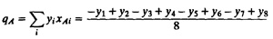
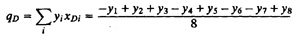
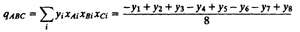
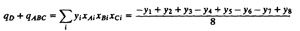
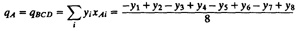

| Previous | Table of Contents | Next |
| TABLE 19.4 A 24–1 Experimental Design | |||||||
|---|---|---|---|---|---|---|---|
| Experiment No. | A | B | C | AB | AC | BC | D |
| 1 | –1 | –1 | –1 | 1 | 1 | 1 | –1 |
| 2 | 1 | –1 | –1 | –1 | –1 | 1 | 1 |
| 3 | –1 | 1 | –1 | –1 | 1 | –1 | 1 |
| 4 | 1 | 1 | –1 | 1 | –1 | –1 | –1 |
| 5 | –1 | –1 | 1 | 1 | –1 | –1 | 1 |
| 6 | 1 | –1 | 1 | –1 | 1 | –1 | –1 |
| 7 | –1 | 1 | 1 | –1 | –1 | 1 | –1 |
| 8 | 1 | 1 | 1 | 1 | 1 | 1 | 1 |
One problem with fractional factorial experiments is that some of the effects cannot be determined. Only the combined influence of two or more effects can be computed. This problem is known as confounding and the effects whose influence cannot be separated are said to be confounded. The following example makes the concept clear.




Thus, we see that if two or more effects are confounded, their computation uses the same linear combination of responses, with the possible exception of the sign.
For reasons that will become apparent soon, the confounding in Example 19.4 can be denoted as
D = ABC
In this design, D and ABC are not the only effects that are confounded. It is easy to see that the A and BCD effects are also confounded.

that is,
A = BCD
In fact, every column in the design represents a sum of 2 effects. With four variables, each at two levels, there are 16 effects (including the I column of mean responses). In a 24–1 design, only eight quantities can be computed. Each quantity therefore represents a sum of 2 effects. The complete list of confoundings in this design is as follows:
A = BCD, B = ACD, C = ABD, AB = CD
AC = BD, BC = AD, ABC = D, I = ABCD
where I = ABCD is used to denote the confounding of ABCD with the mean.
A fractional factorial design is not unique. For the same number of factors k and the same number of experiments 2k–p, there are 2p possible different fractional factorial designs. One 24–1 design was presented in Example 19.3. Another 24–1 design is shown in Table 19.5. This design has the following confoundings:
I = ABD, A = BD, B = AD, C = ABCD
D = AB, AC = BCD, BC = ACD, ABC = CD.
This design is generally not considered as good as the previous design. In the previous design, the mean (I) was confounded with the fourth-order interaction, and the main effects were confounded with third-order interactions.
| TABLE 19.5 Another 24–1 Experimental Design | |||||||
|---|---|---|---|---|---|---|---|
| Experiment No. | A | B | C | D | AC | BC | ABC |
| 1 | –1 | –1 | –1 | 1 | 1 | 1 | –1 |
| 2 | 1 | –1 | –1 | –1 | –1 | 1 | 1 |
| 3 | –1 | 1 | –1 | –1 | 1 | –1 | 1 |
| 4 | 1 | 1 | –1 | 1 | –1 | –1 | –1 |
| 5 | –1 | –1 | 1 | 1 | –1 | –1 | 1 |
| 6 | 1 | –1 | 1 | –1 | 1 | –1 | –1 |
| 7 | –1 | 1 | 1 | –1 | –1 | 1 | –1 |
| 8 | 1 | 1 | 1 | 1 | 1 | 1 | 1 |
| Previous | Table of Contents | Next |